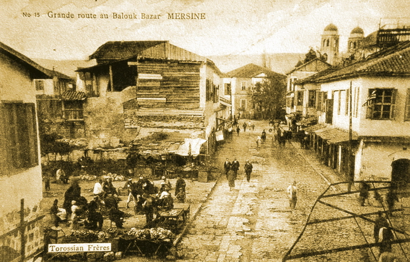

Mersin
Bir diğer deyişle İçel.
Türkiye'nin saklı cenneti.
MERSİN'İN TARİHÇESİAkdeniz’in en sulak ve verimli topraklarından olan Çukurova, toprağı işlemeyi öğrenen insanlığın ilk yerleşim yerlerinden biriydi. Üstelik tarıma elverişli bu büyük ovanın hemen yanı başında ormanlar başlıyordu. Antik çağdaki adı Kilikia olan bölgede insan yerleşimi Yeni Taş Çağı’na kadar uzanmaktadır. Gözlükule ve Yumuktepe olarak bilinen höyüklerde yapılan kazılarda elde edilen buluntular sadece yörenin değil tüm insanlık tarihinin aydınlatılması için çok değerli bilgiler içermektedir. Kentin kuzeyindeki Yumuktepe höyüğünde yapılan kazılarda birçok katman ortaya çıkarılmış. Bunların en eskisi, M.Ö. 6300’lere, en yenisi ise Selçuklu dönemine dayanmaktadır. Kazılardan çıkarılan eserler, Adana Arkeoloji Müzesi ve Mersin Müzesi’nde sergilenmektedir. Mersin’in tarih sahnesine çıkışı 19. yüzyılın ortalarına rastlamaktadır. Bu dönemde henüz bir köy olan bölge, göçmen bir Türkmen aşiretine ev sahipliği yapıyor ve adını da bu aşiretten alıyor. Özellikle Amerika iç savaşı sırasında dünyadaki pamuk kıtlığını gidermek amacıyla Çukurova’da gelişen pamuk üretimi ve bölgenin 1866’da demiryolu ağına bağlanması, Mersin’in kaderini değiştiriyor. Bu dönemde Mersin hızla, Çukurova’nın tarım ürünlerinin ihraç edildiği bir liman ve ticaret merkezi haline geliyor.Şehrin bugünkü durumuna gelmesinde, şu anda çok küçük bir azınlık olsalar da Hıristiyan Levantenlerin önemi yadsınamaz. Şehirde halen Levantenlere ait iki kilise bulunmaktadır: Bunlar; Latin-İtalyan Kilisesi ve Arap-Ortodoks Kilisesi.Mersin sanayi, ticaret, tarım ve turizmi birleştiren ve hızla büyüyen bir kenttir. Aynı zamanda bir liman kenti. Bereketli Çukurova’nın tarım ve sanayi ürünleri Mersin Limanı’ndan ihraç edilmekte ve Tarımın ve sanayinin ihtiyacı olan ithal ürünler de yine bu limandan girmektedir.Batısı Türkiye’nin ve Akdeniz’in en parlak turizm merkezi Antalya, doğusu tarım ve sanayi yöresi Adana ile çevrelenen ilin güneyi boydan boya Akdeniz; kuzeyini ise Anadolu ankarasından Toros sıradağları ayırmaktadır. Tarihin eski dönemlerinde olduğu gibi Akdeniz’in büyük limanlarından birisi ve bir deniz ticaret merkezidir Mersin.Kentte su kemerleri, yapı kalıntıları, höyük ve Roma Hamamı kalıntıları görülebiliyor.Kent içerisindeki anıtsal yapıların hemen tamamı 19. yy. eseri. Kentin eski mahallelerindeki bu eserlerin de çoğu Türk-İslam eserleridir.Hamamlar ise, liman kentlerinin vazgeçilmez yapılarındandır. Bu eski çağlardan bu yana süren bir ihtiyacın ürünüdür. Kiremithane Mahallesi’ndeki Hadra Hamamı (1903), Hastane Caddesi yakınındaki Küçük Hamam ile merkezdeki çarşı içinde bulunan Büyük Hamam da Mersin 19. yy.da bir liman kenti olarak hızla gelişirken yapılmışlardılar. Çevreyi gezdikçe Ortaçağ ve Bizans dönemi kalelerine sıkça rastlanılmaktadır. Bunların bir kısmı Mersin çevresinde. Tırmıl (Tumil / Gotbes) Kalesi ve kent içinde, Doğu Sebze Hali’nin doğusundadır. Bu kalelerin bir kısmı; Arslanköy, Belenkeşlik, Çandır (Paparayn), Dümbelek, Evciler, Gözne, Hebilli, Hisar (Ziyarettepe), Kale, Kalegediği gibi kaleler bulunmaktadır. Kentin ticari açıdan önemi göz önüne alınarak, Türkiye’nin limanı olan serbest bölgesi burada kurulmuş. 785.000 metrekarelik bir alan üzerine kurulan Mersin Serbest Bölgesi, başta tekstil firmaları olmak üzere yaklaşık 250 şirkete ev sahipliği yapıyor. Ayrıca, Mersin–Adana karayolu üzerinde cam, soda, gübre, tekstil, meyve suyu gibi sektörlerde faaliyet gösteren birçok önemli fabrika da bulunmaktadır.Doğu Akdeniz sahilinde, önemli bir liman kenti olan Mersin, palmiye ağaçlarıyla gölgelenen yolları, şehir parkı, modern otelleri, yakınlarındaki tarihi kalıntıları ve sayısız kumsalları ile gezenlere her türlü olanağı sağlamaktadır. |